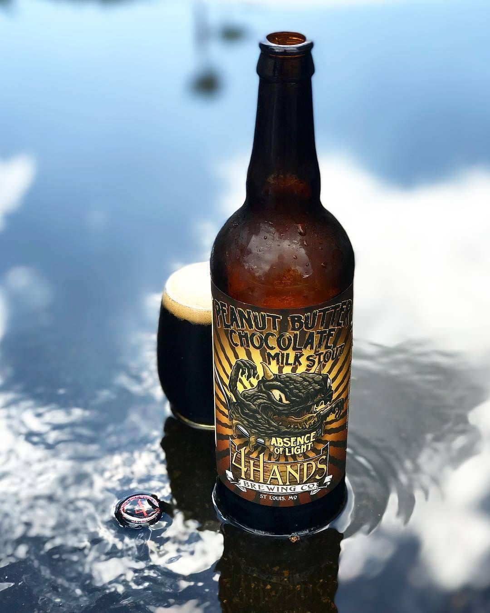

HOME
STOUTS
Absence of Light
4 Hands Brewery
Absence of Light is a milk stout brewed with peanut butter. Chocolate malt dominates the grain bill, backed up by a combination of caramel malts and roasted barley. This provides a very rich, complex flavor with notes of chocolate, coffee, peanut butter and a slightly sweet finish.
4 Hands Brewing Co. was founded in 2011 in the LaSalle Park neighborhood near downtown St. Louis, MO and offer seven year-round offerings along with a vast variety of seasonal beers. 4 Hands is one of the top growth brands in the nation with all core and seasonal brands ranking the top in their class locally via IRI.
Check out their site HERE 